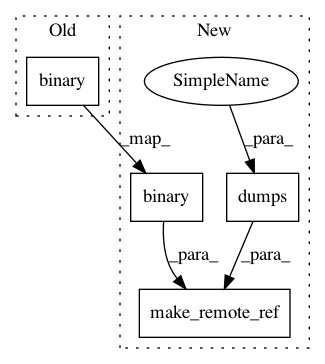

b7f246c4516fa726c6f7ae8b5d1dac206cdb77d5,python/ray/experimental/client/server/server.py,RayletServicer,_schedule_method,#RayletServicer#Any#Any#Any#,93
Before Change
with stash_api_for_tests(self._test_mode):
output = getattr(actor_handle, task.name).remote(*arglist)
self.object_refs[output.binary()] = output
return ray_client_pb2.ClientTaskTicket(return_id=output.binary())
def _schedule_actor(self,
task: ray_client_pb2.ClientTask,
After Change
with stash_api_for_tests(self._test_mode):
output = getattr(actor_handle, task.name).remote(*arglist)
self.object_refs[output.binary()] = output
pickled_ref = cloudpickle.dumps(output)
return ray_client_pb2.ClientTaskTicket(
return_ref=make_remote_ref(output.binary(), pickled_ref))
def _schedule_actor(self,
task: ray_client_pb2.ClientTask,
In pattern: SUPERPATTERN
Frequency: 3
Non-data size: 4
Instances
Project Name: ray-project/ray
Commit Name: b7f246c4516fa726c6f7ae8b5d1dac206cdb77d5
Time: 2020-12-10
Author: me@barakmich.com
File Name: python/ray/experimental/client/server/server.py
Class Name: RayletServicer
Method Name: _schedule_method
Project Name: ray-project/ray
Commit Name: b7f246c4516fa726c6f7ae8b5d1dac206cdb77d5
Time: 2020-12-10
Author: me@barakmich.com
File Name: python/ray/experimental/client/server/server.py
Class Name: RayletServicer
Method Name: WaitObject
Project Name: ray-project/ray
Commit Name: b7f246c4516fa726c6f7ae8b5d1dac206cdb77d5
Time: 2020-12-10
Author: me@barakmich.com
File Name: python/ray/experimental/client/server/server.py
Class Name: RayletServicer
Method Name: PutObject